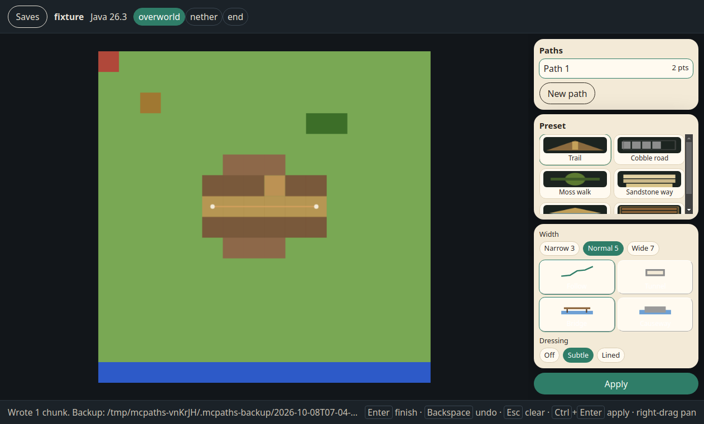

Minecraft Java, on the save itself
Draw a path. Leave the rest of the world alone.
MC Paths is a desktop map for Java Edition. You sketch a line over the world, pick a preset, and the app writes that path into the region files. A copy of every region it touches is stored in the save before anything is changed.

How to use
-
1
Open a save
Pick a world from the Minecraft saves folder, or open any folder that contains
level.dat. -
2
Draw the line
Click points on the map, drag a point to move it, Backspace to undo. Enter finishes the spline.
-
3
Pick a preset
Width, hills, water, and dressing sit next to the map. The preview updates before anything is written.
-
4
Apply
Touched
.mcafiles are copied into.mcpaths-backup, then the path is written. Open the save in Minecraft.
Presets
- Trail Dirt path, with coarse dirt along the edge.
- Cobble road Cobblestone center, stone brick border, gravel shoulder.
- Moss walk Moss block, mossy cobble in the middle, rooted dirt at the edge.
- Sandstone way Smooth sandstone with a cut sandstone border.
- Adaptive Follows the biome: desert, badlands, swamp, snow, forest, peaks. Otherwise Trail.
- Boardwalk Planks and slabs. Wood follows the biome, spruce when nothing else matches.
Default is Trail, Normal width (5), Follow hills, Bridge water, Subtle dressing. Narrow is 3 blocks, Wide is 7. Tunnel carves instead of following the slope. Causeway fills water instead of spanning it.
Versions
Java 1.18 through the latest 1.21.x that minecraft-data knows, plus 26.1, 26.2 (DataVersion 4903), and 26.3 (DataVersion 5023). Worlds before 1.18, and 26.4 or newer, are refused.
Section bit-packing is unchanged through 26.3, so chunks are read with prismarine’s 1.21 palette codec. The save keeps its own DataVersion. 26.2 stays 4903 and 26.3 stays 5023. The 1.21 value 4671 is never written back.